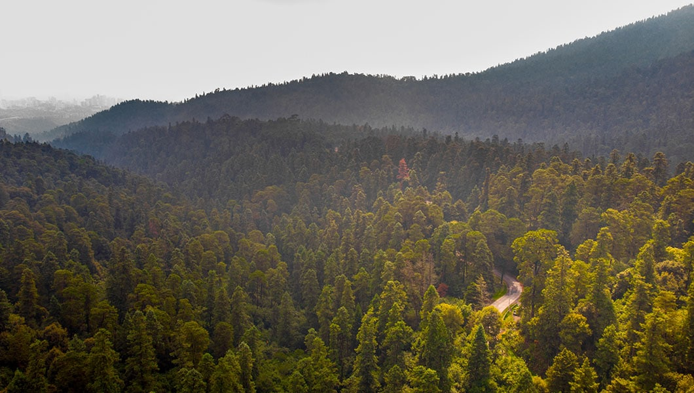
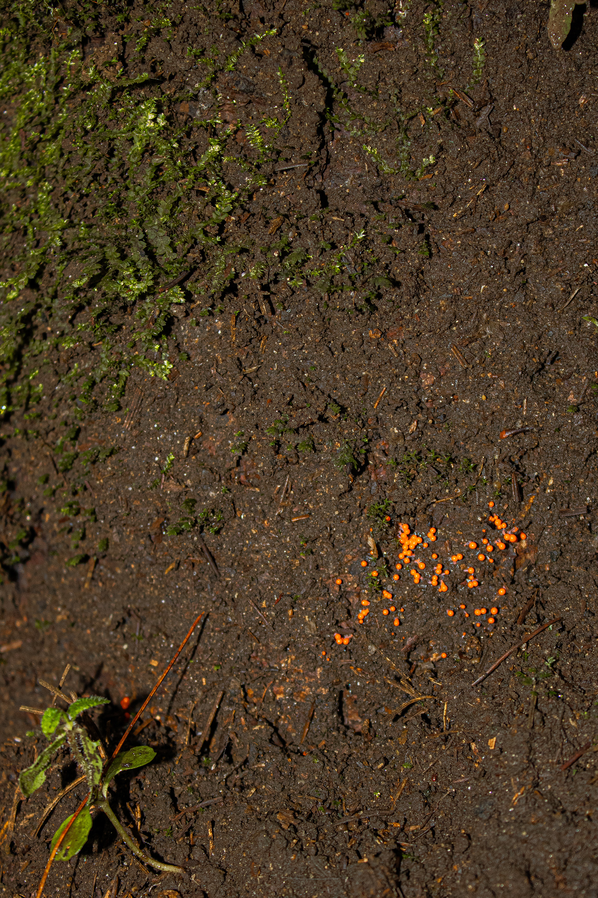
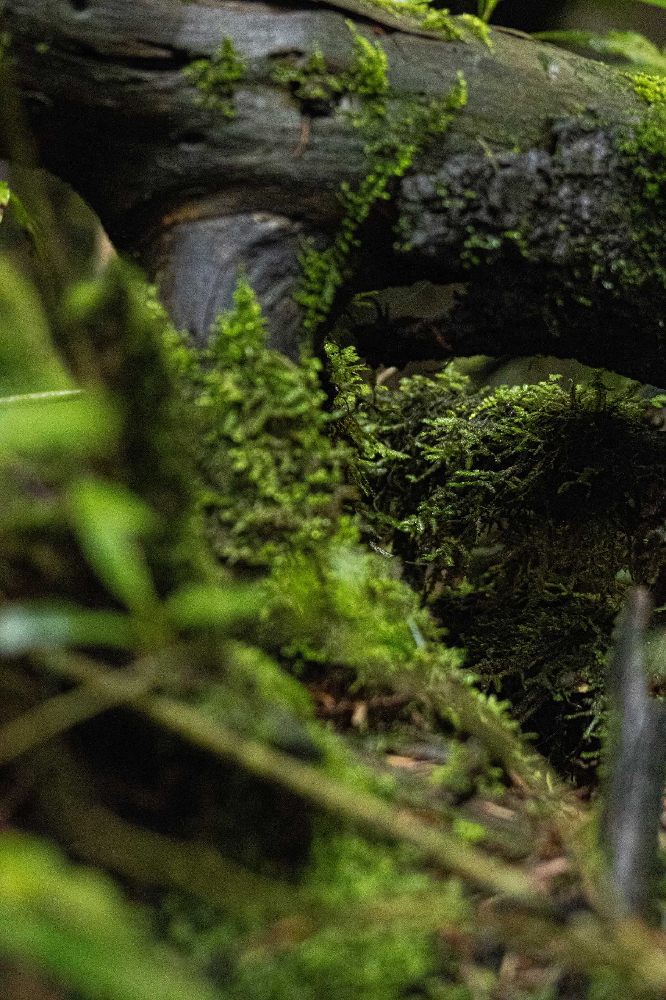
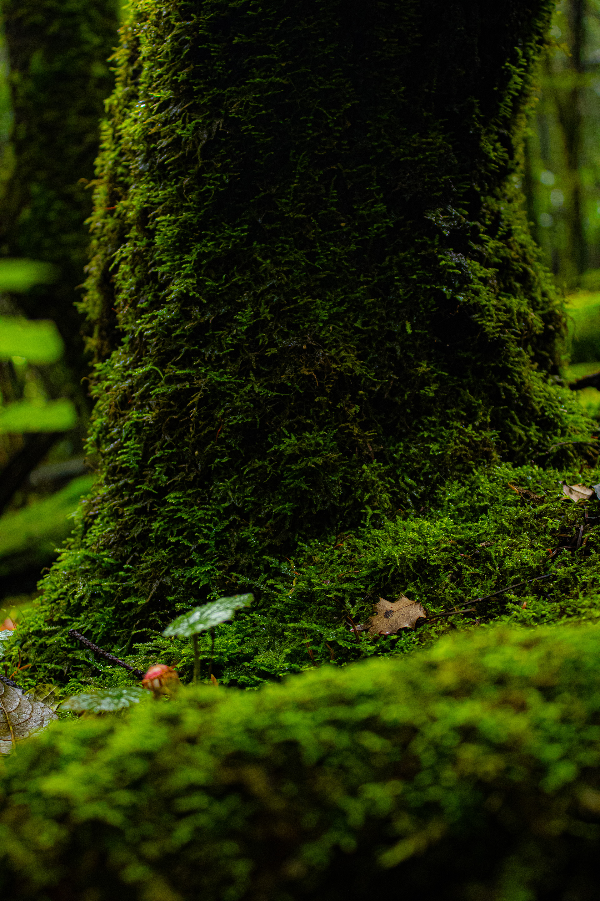

Introducción al proyecto
Explora las especies, hábitats y conexiones entre el suelo, las plantas y los hongos del Desierto de los Leones. Descubre cómo se relacionan bajo tierra y cómo esta red ayuda a mantener vivo el ecosistema.
El suelo
Descripción de la zona: Desierto de los Leones
- El suelo de esta zona presenta una textura suave y húmeda.
- Tiene un color café claro a café oscuro.
- Se observa mucho musgo y vegetación.
- En esta zona se encuentran pocas rocas.
- Conforme se avanza hacia el suelo se pueden encontrar diferentes elementos de materia orgánica y raíces.



El suelo funciona como un espacio donde interactúan raíces, hongos, microorganismos, materia orgánica y nutrientes. Dentro de este sistema se desarrollan diferentes tipos de hongos, algunos asociados directamente con las raíces de los árboles y otros encargados de descomponer la materia orgánica.
Relación entre suelo, plantas, raíces y hongos
Las raíces establecen asociaciones con hongos (micorrizas) que facilitan la absorción de agua y nutrientes. Los hongos descomponedores reciclan materia orgánica, liberando nutrientes que las plantas pueden utilizar. Juntos forman redes que conectan individuos vegetales y permiten intercambio de recursos —la llamada Wood Wide Web—.
- Micorrizas: hongos simbióticos que incrementan la capacidad de absorción de las raíces.
- Descomponedores: hongos que degradan madera y materia vegetal, reintegrando nutrientes al suelo.
- Redes de micelio: vías para el transporte de agua, nutrientes e información química entre plantas.